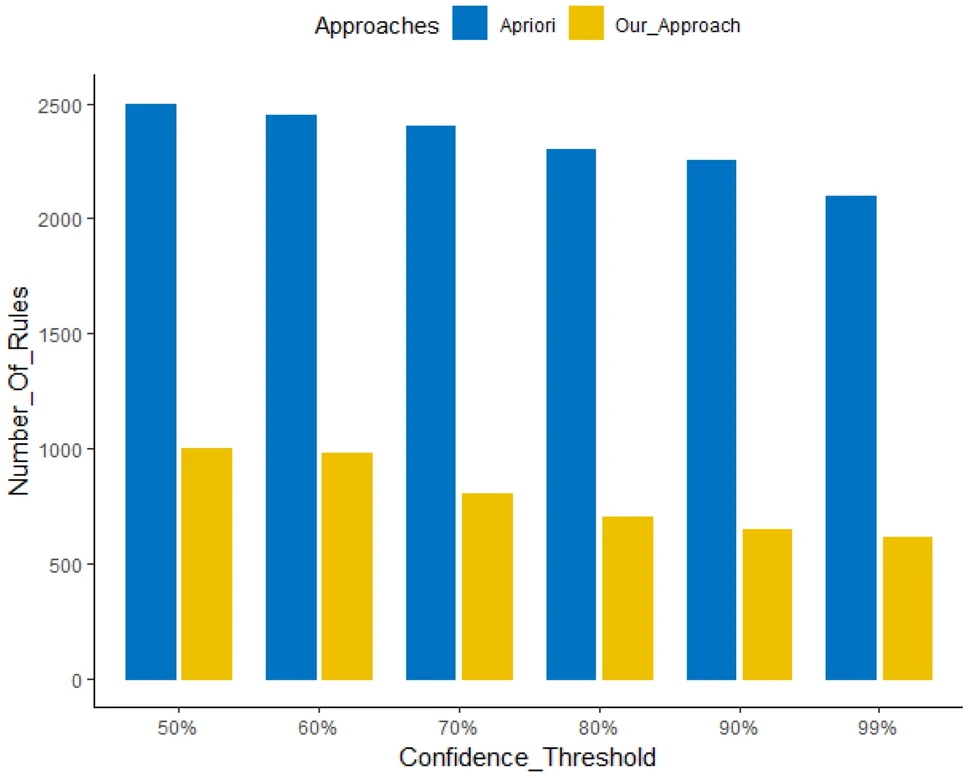
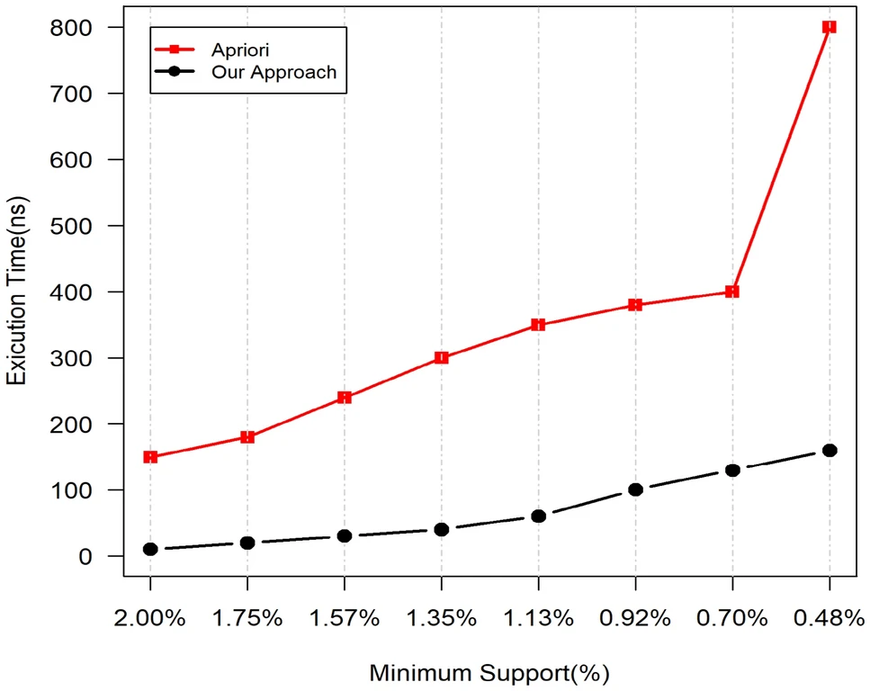

PUBLICATION论文 · JAIHC · 2023
ABSTRACT摘要
Notifications arriving at inappropriate moments or carrying unrelated material cause significant disruption to smartphone users. Existing rule-based classifiers suffer from accuracy and reliability issues with small data, while association rule mining (ARM) generates vast numbers of redundant rules that are inefficient for context-aware decisions. 在不适当时刻到达或携带无关内容的通知会对智能手机用户造成显著干扰。现有的基于规则的分类器在小数据上存在准确性和可靠性问题，而关联规则挖掘（ARM）生成大量冗余规则，对上下文感知决策效率低下。
We propose Behavioral Adversarial Traversal Tree (BADT), a rule-based approach that extracts concise, non-redundant user behavioral rules across multi-dimensional contexts (location, app-type, social relation, and prominent time slots). Using a real-world dataset collected via our NotifyMiner Android app (14,480 notifications from 29 users), BADT identifies ideal notification delivery moments while eliminating redundant rules through bottom-up tree trimming. 我们提出了行为对抗遍历树（BADT）、一种基于规则的方法，在多维上下文（位置、应用类型、社交关系、显著时间段）中提取简洁、非冗余的用户行为规则。使用通过我们的NotifyMiner Android应用收集的真实数据集（29名用户的14,480条通知），BADT通过自底向上的树修剪识别理想的通知传递时刻，同时消除冗余规则。
METHOD方法
An Android app using timestamp experience sampling (TESP) captures user reactions to notifications across 7 months. Contexts include GPS location, app category, sender relationship, and user action (click, dismiss, defer). Idle notifications (zero click-through rate) are screened out before rule generation. 一款使用时间戳体验采样（TESP）的Android应用，在7个月内捕捉用户对通知的反应。上下文包括GPS位置、应用类别、发送者关系和用户行为（点击、忽略、推迟）。在规则生成前筛选掉空闲通知（零点击率）。
Context precedence is determined by information gain. The tree is built top-down across four levels: Location → App-Type → Social Relation → Time Slot. Each node's confidence is computed from the dominant behavior ratio. If confidence reaches 100%, the branch terminates early. 通过信息增益确定上下文优先级。树自顶向下跨四层构建：位置 → 应用类型 → 社交关系 → 时间段。每个节点的置信度从主导行为比率计算。如果置信度达到100%，分支提前终止。
Bottom-up trimming compares each leaf with its parent: if behavior and confidence match, the leaf is redundant and deleted. This produces a minimal set of interpretable rules (e.g., "Work + Entertainment-app → Dismiss [85%]") without the combinatorial explosion of traditional ARM. 自底向上修剪将每个叶子与其父节点比较：如果行为和置信度匹配，则该叶子冗余并被删除。这产生一组最小的可解释规则（例如，"工作 + 娱乐应用 → 忽略 [85%]"），避免了传统ARM的组合爆炸。
RESULTS结果
BADT generates 60% fewer rules than Apriori across all confidence thresholds (55%–100%). At 70% threshold, Apriori produces ~2,400 rules while BADT produces ~1,200 rules for Dataset-1. The gap widens as confidence decreases because Apriori suffers from combinatorial redundancy while BADT's tree pruning keeps growth minimal. 在所有置信度阈值（55%-100%）下，BADT比Apriori生成少60%的规则。在70%阈值下，Apriori为数据集1产生约2,400条规则，而BADT仅产生约1,200条。随着置信度降低，差距扩大，因为Apriori遭受组合冗余之苦，而BADT的树修剪保持最小增长。
BADT achieves ~93% average accuracy and ~7% error rate — outperforming RIDOR, ZeroR, OneR, DT, and PART classifiers. The best competitor (CM5) reaches 87% accuracy with 15% error. BADT's multi-dimensional context modeling captures individual behavioral patterns more precisely than shallow classifiers. BADT达到约93%平均准确率和约7%错误率——超越RIDOR、ZeroR、OneR、DT和PART分类器。最佳竞争对手（CM5）达到87%准确率和15%错误率。BADT的多维上下文建模比浅层分类器更精确地捕捉个体行为模式。
At 0.48% minimum support, BADT runs 5× faster than Apriori (160ms vs. 800ms on Dataset-1; 120ms vs. 500ms on Dataset-2). The speedup comes from scan reduction and elimination of redundant candidate generation. Even at higher supports (2%), BADT maintains a 3× advantage. 在0.48%最小支持度下，BADT比Apriori运行快5倍（数据集1上160ms vs. 800ms；数据集2上120ms vs. 500ms）。加速来自扫描减少和冗余候选消除。即使在更高支持度（2%）下，BADT仍保持3倍优势。

Fig. 8 — Behavioral rules generation comparison (Dataset-1): BADT (yellow) vs. Apriori (blue) across confidence thresholds. © 2023 Springer. 图8 — 行为规则生成对比（数据集1）：BADT（黄色）vs. Apriori（蓝色）跨置信度阈值。© 2023 Springer。
Fig. 14 — Execution time comparison: BADT vs. Apriori on Dataset-1 across minimum support values. © 2023 Springer. 图14 — 执行时间对比：BADT vs. Apriori在数据集1上跨最小支持度值。© 2023 Springer。BIBTEX引用
@article{Khan2023,
author = {Khan, Muhammad Faizan and Lu, Lu and Toseef, Muhammad and Musyafa, Ahmed and Amin, Ahmad},
title = {NotifyMiner: rule based user behavioral machine learning approach for context wise personalized notification services},
journal = {Journal of Ambient Intelligence and Humanized Computing},
year = {2023},
volume = {14},
number = {10},
pages = {13301--13317},
doi = {10.1007/s12652-022-03785-1}
}